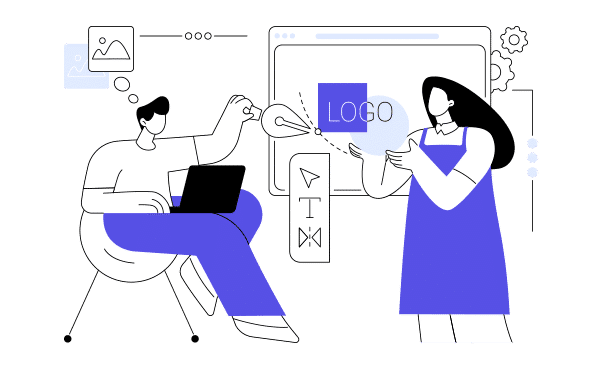

Misión
Proveer seguridad amplia, integrada y automatizada para proteger personas, dispositivos y datos en todos los entornos digitales.

Visión
Garantizar un mundo digital seguro y conectado, ofreciendo soluciones tecnológicas innovadoras que permitan a las organizaciones operar con confianza.

Valores
- Innovación: desarrollo constante de nuevas tecnologías de seguridad.
- Integridad: transparencia y confianza en sus relaciones comerciales.
- Colaboración: : trabajo conjunto con partners y clientes para fortalecer ecosistemas digitales.
- Excelencia: compromiso con la calidad, desempeño y liderazgo en el sector.
- Responsabilidad: contribución al desarrollo sostenible y ético del entorno tecnológico.
Identidad visual y comunicación institucional
El discurso visual de Fortinet se caracteriza por su sobriedad, coherencia y fortaleza tecnológica. Su identidad visual se basa en tres pilares:
- Logotipo: compuesto por la palabra Fortinet en tipografía sans serif robusta, con un ícono formado por bloques rojos que representan un muro de protección o firewall, símbolo directo de seguridad digital.
- Colores institucionales: el rojo (seguridad, energía, alerta) y el gris (estabilidad, tecnología) son predominantes, acompañados de blanco como fondo neutro que refuerza claridad y confianza.
- Colores institucionales: se emplean fuentes limpias, modernas y de alta legibilidad; los diseños privilegian el minimalismo, fondos oscuros y líneas geométricas que refuerzan el carácter tecnológico.
El tono visual y discursivo de Fortinet busca transmitir autoridad, confianza y protección. Su narrativa visual utiliza imágenes de infraestructura digital, personas trabajando con tecnología, y gráficos conceptuales que representan redes, conectividad y escudos.
Ejemplos de aplicación
- Innovación: desarrollo constante de nuevas tecnologías de seguridad.
- Integridad: transparencia y confianza en sus relaciones comerciales.
- Colaboración: trabajo conjunto con partners y clientes para fortalecer ecosistemas digitales.
- Excelencia: compromiso con la calidad, desempeño y liderazgo en el sector.
- Responsabilidad: contribución al desarrollo sostenible y ético del entorno tecnológico.
Rasgos distintivos
- Innovación: desarrollo constante de nuevas tecnologías de seguridad.
- Integridad: transparencia y confianza en sus relaciones comerciales.
- Colaboración: : trabajo conjunto con partners y clientes para fortalecer ecosistemas digitales.
- Excelencia: compromiso con la calidad, desempeño y liderazgo en el sector.
- Responsabilidad: contribución al desarrollo sostenible y ético del entorno tecnológico.